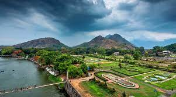

Palakkad
Celebrated as the Granary of Kerala, Palakkad is a vast stretch of fertile plains interspersed with hills, rivers, mountain streams and forests. The gateway to Kerala from the north, a 40 kilometre break in the mountains known as the Palakkad Gap gives access to this land situated at the foot of the Western Ghats. The pass acts as a corridor between Kerala and the neighbouring Tamil Nadu and played a key role in the trade relations between the east and west coasts of peninsular India. Deriving its name from the Malayalam words Pala (Alsteriascholaris) and Kadu (forest), this place was once a stunning expanse of forest covered with the sweet-scented flowers of the Pala tree. A potpourri of Tamil and Kerala culture, some of the finest Carnatic musicians hail from this district which continues to be a principally agrarian society.
TOURIST ATTRACTIONS

Silent Valley National Park
The Silent Valley National Park, with its lush green forests and beautiful views of the rich flora, is a popular destination for nature and wildlife lovers in Kerala. With its long, detailed history and the unique status of a Rain Forest, this national park is truly a sight to visit. The well-planned Safari and the beautiful stop-overs around the park only make a trip to this part of Kerala more worthwhile.

Malampuzha Garden
The beautifully designed gardens of Malampuzha are one of the most attractive Palakkad tourist places. Lush green lawns that are paired with well laid out flower beds full of vibrant and bright colours, the abundance of majestic fountains and artistically designed sculptures make for an idyllic escape from city life.

Nelliyampathy
A precious jewel of not just the state of Kerala but all of South India, Nelliyampahty,, by all means, a tourist's paradise. Blessed with tea, coffee, pepper and orange plantations, this place with its deep forests, breathtaking natural views, waterfalls are definitely among one of the most beautiful and best places to visit in Palakkad.